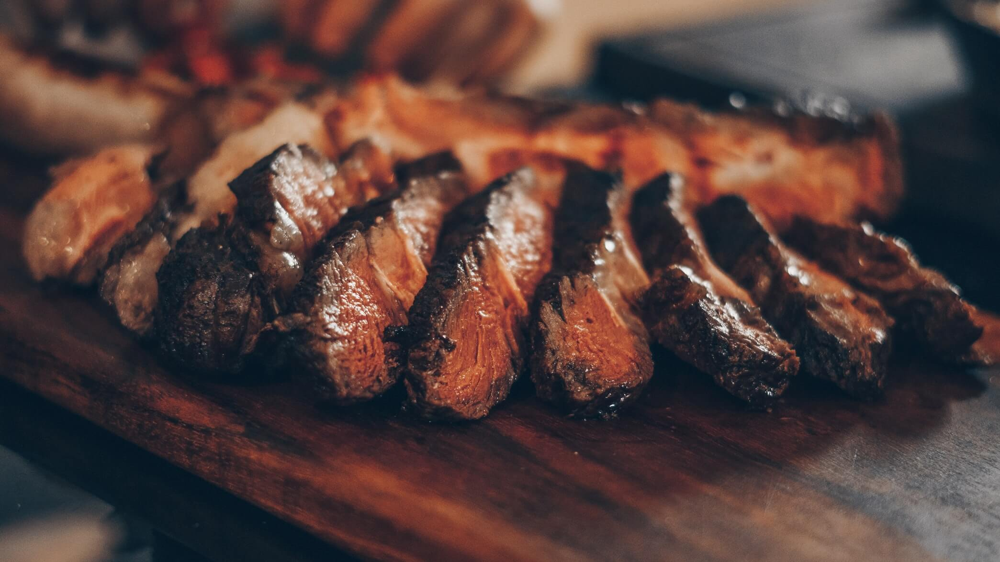

Stuffed Flank Steak
Author: Organization.Metropolitan Life Insurance Company
Source: Metropolitan Cookbook (1964-02-01)
Category: Meat, Main Dish
Yield: 6 - 8 servings
Measure: avoirdupois
Equipment: oven, skillet, measuring cups, measuring spoons

Photo Credit: Emerson Vieira
Ingredients
- 2 tablespoons butter, or margarine
- 1 medium onion, chopped
- 3 cups soft bread crumbs
- 1/2 teaspoon politry seasoning
- 1/2 teaspoon salt
- dash of pepper
- 3 tablespoons hot water
- 1 egg, well beaten
- 1 flank steak, (about 2 pounds)
- 2 tablespoons fat, or salad oil
- 1/2 cup boiling water
Directions
- Set oven for slow, 325°
- Melt butter in a 10-inch skillet
- Add onion
- Cook until golden brown
- Add next 6 ingredients and mix well
- Spread on steak
- Roll up like a jelly roll; tie securely with string
- Heat fat in the skillet
- Brown meat roll on all sides
- Sprinkle with additional salt and pepper; add the 1/2 cup boiling water
- Cover; bake 1 1/2 hours or until meat is tender